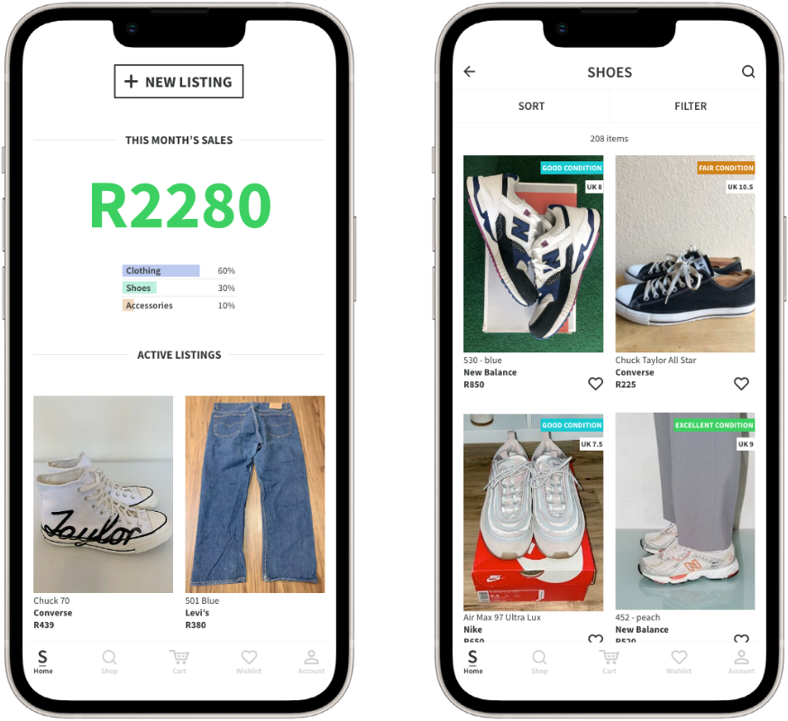

Superbalist Exchange
Slow Down Fast Fashion
Product Designer | UI/UX Designer

Retail Meets Thrift
Fast fashion and consumerism are wasteful and damaging to the planet. One way to counter this is the exchange of second-hand clothing, however the process of buying and selling second-hand clothing in thrift stores is often time-consuming and unreliable.
I developed the concept of Superbalist Exchange, which allows customers of Superbalist, a leading online clothing retailer, to buy and sell second-hand items which they have purchased from Superbalist.
How it works:
- A user’s Superbalist Exchange account is linked with their Superbalist account, so that they can select items to sell from their Superbalist order history
- Users add listings, with images and details about each item, such as condition and comments
- Certain information – such as the description and size – is automatically populated from the Superbalist server, as each listing is linked to an original order
- Users can view and purchase items
- Sellers can be reviewed and build credibility